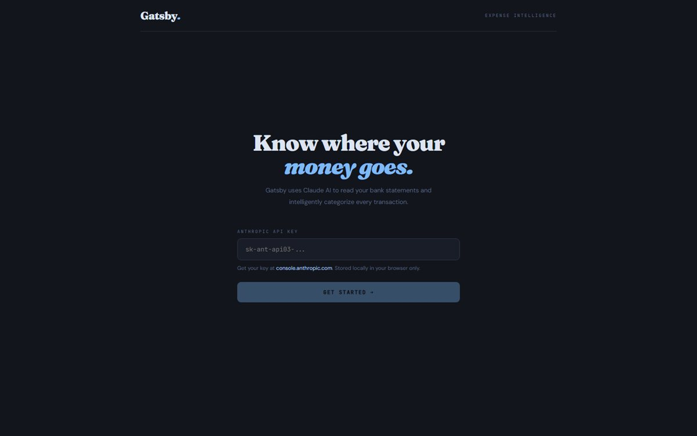

Gatsby: AI Expense Intelligence
Upload bank-statement PDFs from any bank and Claude reads, extracts and categorizes every transaction into a clean dashboard, with monthly trends, a category breakdown and inline fixes for any misclassification.
ReactViteClaude APIPDF parsing
🔒 Private repo · demo on request